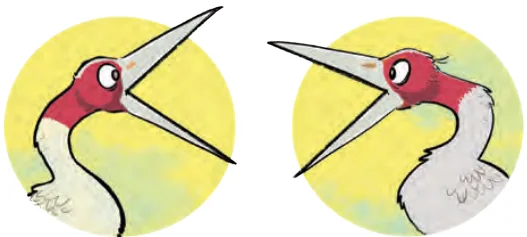
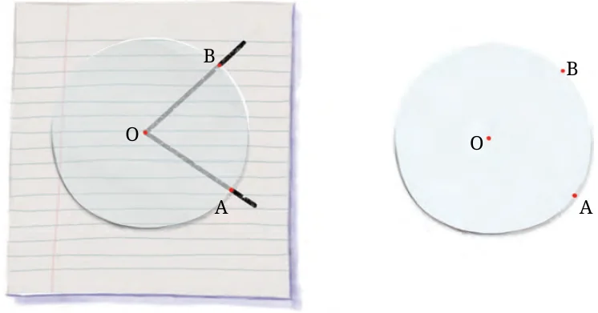
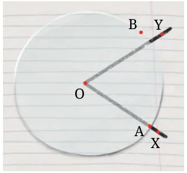

- Fold a rectangular sheet of paper, then draw a line along the fold created. Name and compare the angles formed between the fold and the sides of the paper. Make different angles by folding a rectangular sheet of paper and compare the angles. Which is the largest and smallest angle you made?

- In each case, determine which angle is greater and why.
- \(\angle AOB\) or \(\angle\)
- \(\angle AOB\) or \(\angle\)
- \(\angle XOB\) or

- Which angle is greater:
Comparing angles without superimposition
Two cranes are arguing about who can open their mouth wider, i.e., who is making a bigger angle. Let us first draw their angles. How do we know which one is bigger? As seen Fig. 2.10

before, one could trace these angles, superimpose them and then check. But can we do it without superimposition? Suppose we have a transparent circle which can be moved and placed on figures. Can we use this for comparison? Let us place the circular paper on the angle made by the first crane. The circle is placed in such a way that its centre is on the vertex of the angle. Let us mark the points A and B on the edge circle at the points where the arms of the angle pass through the circle.

Can we use this to find out if this angle is greater than, or equal to or smaller than the angle made by the second crane? Let us place it on the angle made by the second crane so that the vertex coincides with the centre of the circle and one of the arms passes through OA.

Can you now tell which angle is bigger?
Which crane was making the bigger angle? If you can make a circular piece of transparent paper, try this method to compare the angles in Fig. 2.10 with each other.
Teacher’s Note
A teacher needs to check the understanding of the students around the notion of an angle. Sometimes students might think that increasing the length of the arms of the angle increases the angle. For this, various situations should be posed to the students to check their understanding on the same.